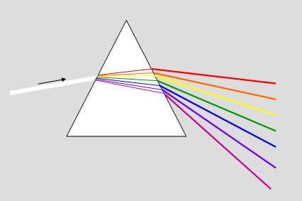
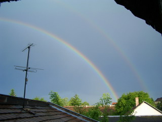

A híres angol tudós, saac Newton I volt az első, aki megmagyarázta a szivárványt a XVII. században, Descartes (1596-1650) korábbi optikai munkásságának felhasználásával. Megmutatta, hogy a napfény különböző színekből áll, amit az ember szeme nem tud elkülöníteni. Valójában, amikor megnézed a Napot délben (légy óvatos, néhány másodpercnél ne tartson tovább), fehérként jelenik meg. A fény színek sorozata: piros, narancs, sárga, zöld, kék, indigó és ibolya, melyet látható spektrumnak nevezünk. Ez két másik színt is tartalmaz, amit nem látunk: infravörös (amit szemünk nem észlel, de bőrünk hőként észleli) és az ultraibolya (amitől lebarnulunk).
A fény továbbterjedése mindig egyenes vonalú, de az iránya megváltozhat, mikor útjába teszünk egy akadályt. Annak bemutatására, hogy a fehér fény valójában színek keveréke, Newton háromszög alakú üveget használt, amit prizmának hívunk. Amikor a fény átmegy a prizmán, megváltozik az iránya (amit fénytörésnek nevezünk). A törési szög az egyes színeknél más és más, így amikor a fény átmegy a prizmán hét különböző színt ad. A fényről azt mondhatjuk, hogy felbontottuk.

Néha egy halványabb és vastagabb másodlagos szivárvány is látható. A másodlagos szivárványokat az okozza, hogy a fény egy része a csöpp elejéről is visszatükröződik, és 50-53°-ban távozik. A második tükröződés eredményeként, a másodlagos szivárvány színei fordítottak, a kék van kívül és a vörös belül. A megvilágítatlan sávot a két szivárvány között alexander szalagnak hívják. Ennél is ritkább a háromszoros szivárvány, néhány megfigyelő jelentett négyszeres szivárványt is, melyben a legkülső ív hullámzott. Ezek a szivárványok a nap és a szemlélődő között helyezkednek el, megnehezítve az észlelésüket. Sokszoros szivárványtokat először Felix Billet (1808-1882) írta le. Laboratóriumi körülmények között jelentősen könnyebb sokszoros szivárványokat megfigyelni, összegyűjtött fényel, nevezetesen lézerrel. Hatodlagos szivárványt először K. Sassan figyelt meg 1979-ben HeNe (hélium-neon) lézert használva. Argon-ion lézert használva 98-ban kétszázadlagos szivárványt is megfigyletek. Néhanapján egy szivárványhoz kapcsolódó jelenség fordul elő, mikor az ív alatt számos halvány, elmosódott szivárvány tűnik fel, ami nagyon-nagyon ritkán a másodlagos ívnél is látható. Ezek valamicsék elkülönülnek, és a színeik sem egyeznek meg az elsődleges szivárvánnyal. Ezeket létszámon felüli szivárványnak nevezik, és létezésüket nem lehet a klasszikus geomatriai optikával magyarázni.
